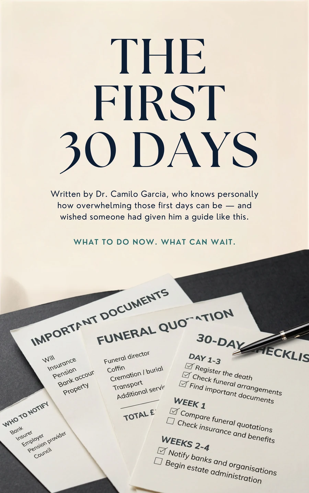
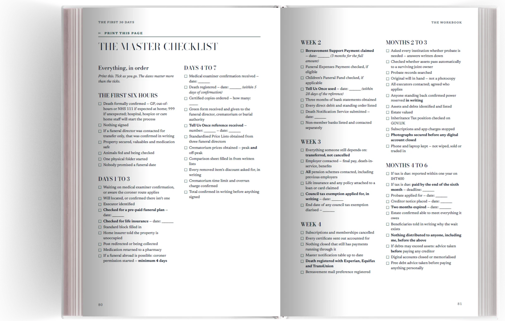
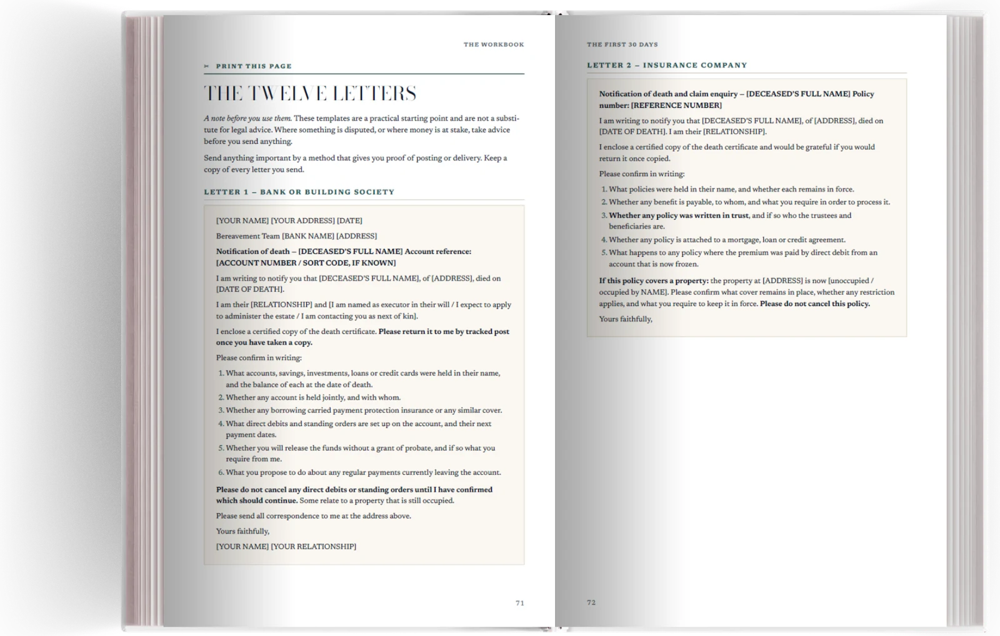
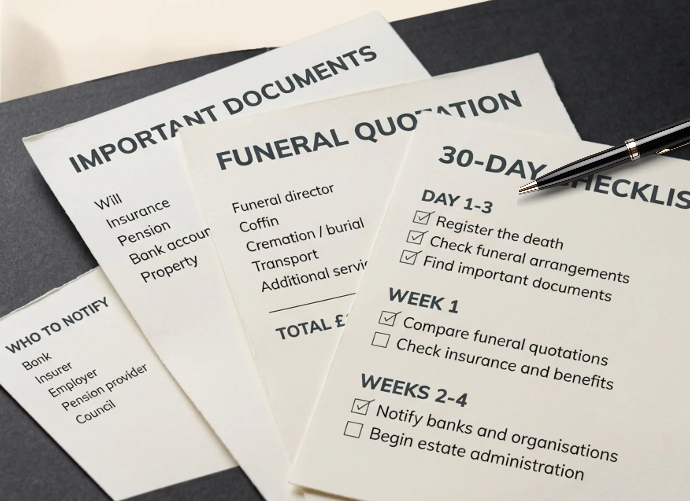

Standard edition
If you need the answers.
£14One payment
- The full 107-page guide as a PDF
- The five questions, and the page each answer sends you to
- The deadlines on one page
- The weekly checklists
Someone has died.
A practical guide to the first thirty days: what to do now, what can wait, what to ask, and what to keep track of.

Forms. Decisions. A funeral director with a diary open. A bank asking for a document nobody has explained. Relatives who need telling, and one who needs telling gently.
Some of it carries a deadline. Most of it does not. Nothing about the way it arrives tells you which is which.
That is the part this book is for.
Nearly everything in this book can be found somewhere. On GOV.UK. In a leaflet handed over at a desk. In a letter from a solicitor, or a conversation you were too tired to follow. That is precisely the difficulty. It is scattered across dozens of places, written for people who are not grieving, and it reaches you in whatever order the world happens to send it.
The First 30 Days does one thing. It puts the practical aftermath of a death into a sequence a person can actually follow: what to do first, what can safely wait weeks, what carries a deadline nobody will mention, what to ask before agreeing to anything, and what to write down while you still can.
It is short where it can be and specific where it matters. It is written to be read at two in the morning by someone who has not slept.
This is the opening page of the book, working. It costs nothing, and on most nights it is the only page anyone needs.
Every part of the book opens like this: what it solves, and the two or three things worth doing before anything else.
Nobody writes to remind you about these. It is the page families cut out and put where they will see it.
Bereavement Support Payment is not means-tested, and nobody claims it on your behalf. Claim within three months of the death and you receive the lump sum and all eighteen monthly payments. Leave it a year and the lump sum is gone. Leave it twenty-one months and usually all of it is.
Higher rate, at the rates published at the time of writing. The guide sets out who qualifies, what the lower rate pays, and where to check today's figures on GOV.UK.
Wide margins. Short paragraphs. Tables you can fill in by hand. Nothing to decode, and no page that assumes you read the one before it.


Read it on a phone at two in the morning, or print it and write in the margins. Both were designed for.
It is not meant to be read front to back. Each part opens by saying what it solves and what to do first, so you can arrive at any page in any state and be useful within a minute.
Where the death happened, whether a coroner has been mentioned, and what you have been asked to agree to. It sends you to one page and tells you to stop there.
What actually happens and who does it. What a coroner's involvement does and does not mean. Then the appointment, the documents to bring, and how many certified copies to buy.
The conversation you are least prepared for and most likely to overpay in, with a comparison sheet built on the same rows as the statutory price list.
Banks, insurers, employers, pension providers, the council, and the digital accounts nobody thinks of until later. What Tell Us Once covers, and what it leaves for you.
The shortest part, and worth more per page than anything else in the book. Bereavement Support Payment, and the list most families miss at least two things on.
The letters demanding money, what the estate owes and what you personally do not, the creditor notice period, and the point at which an hour of paid advice is the cheapest thing you will buy.

What to do now.
What can wait.
The Standard edition is the manual. The Full edition adds the parts you write on — the quotation sheet, the deadline page laid out for your dates, and the letters you can send without drafting them.
If you need the answers.
If you are the one doing it.
No. It is a practical guide. Where a question genuinely needs a solicitor, it says so plainly and tells you where to get free advice first.
It is written for England and Wales. Registration timings, probate and several of the deadlines differ elsewhere, so if you are dealing with a death in Scotland or Northern Ireland this is not the right guide for you.
The book is the same. The Standard edition is the guide itself. The Full edition adds the working documents — the quotation sheet as a printable worksheet, the deadlines page laid out for your dates, and the notification letters ready to send.
A PDF, immediately after payment, at the email address you buy with. No app, no login, no subscription.
No, and you shouldn't try. Answer the five questions on page two, turn to the page it sends you to, and stop there. The rest waits until you need it.
Rates and thresholds change every year, so the book prints almost no figures. Where a number matters you get the reasoning, the deadline, and the place to look up the current amount. Where a figure is printed, it is dated.